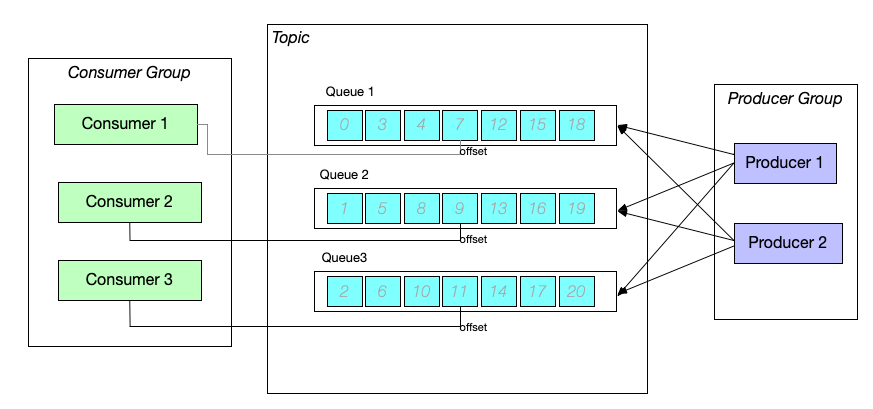
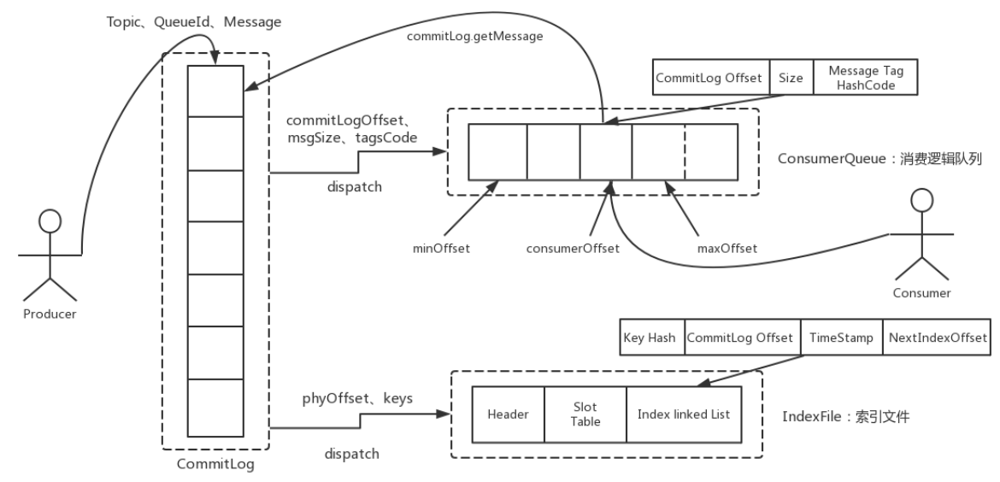
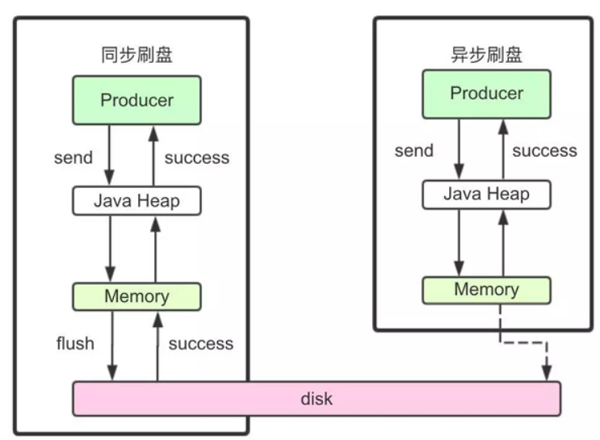
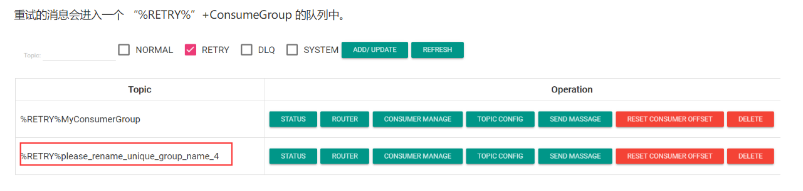
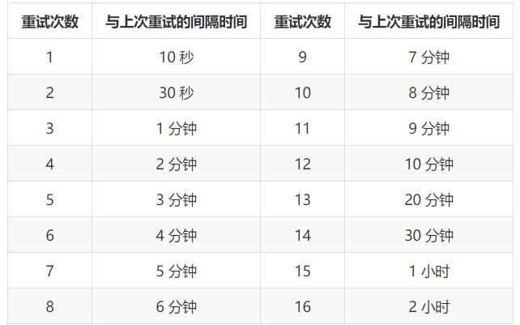
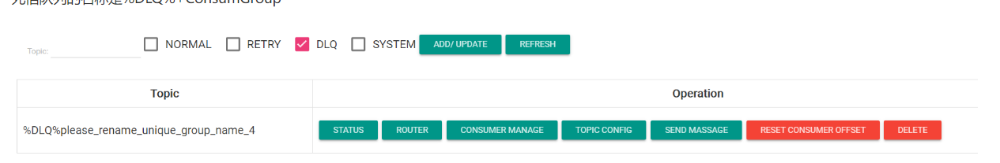

基础概念
消息模型
RocketMQ 主要由 Producer、Broker、Consumer 三部分组成，其中 Producer 负责生产消息，Consumer 负责消费消息，Broker 负责存储消息。Broker 在实际部署过程中对应一台服务器，每个 Broker 可以存储多个 Topic 的消息，每个 Topic 的消息也可以分片存储于不同的 Broker。Message Queue 用于存储消息的物理地址，每个 Topic 中的消息地址存储于多个 Message Queue 中。ConsumerGroup 由多个 Consumer 实例构成。
图示如下：

图中的主题（Topic）, 队列（Queue）, 消费者（Consumer），生产者（Producer）已经熟悉了， 但是图中的消费组（Consumer Group）和生产组（Producer Group）又是什么呢？
消息消费者
负责消费消息，一般是后台系统负责异步消费。一个消息消费者会从 Broker 服务器拉取消息、并将其提供给应用程序。从用户应用的角度而言提供了两种消费形式：
- 拉取式消费
- 推动式消费。
拉取式消费的应用通常主动调用 Consumer 的拉消息方法从 Broker 服务器拉消息、主动权由应用控制。一旦获取了批量消息，应用就会启动消费过程。
推动式消费模式下 Broker 收到数据后会主动推送给消费端，该消费模式一般实时性较高。
消费者组
消费者同样会把同一类 Consumer 组成一个集合，叫做消费者组，这类 Consumer 通常消费同一类消息且消费逻辑一致。消费者组使得在消息消费方面，实现负载均衡和容错的目标变得非常容易。要注意的是，消费者组的消费者实例必须订阅完全相同的 Topic。RocketMQ 支持两种消息模式： 集群消费（Clustering）和广播消费（Broadcasting）
集群消费模式下，相同 Consumer Group 的每个 Consumer 实例平均分摊消息。
广播消费模式下，相同 Consumer Group 的每个 Consumer 实例都接收全量的消息。
RocketMQ 中，消费组相当于订阅者，订阅 Topic 是以一个消费组来订阅的，发送到 Topic 的消息，只会被订阅此 Topic 的每个 group 中的一个 consumer 消费。 一个消费组中可以包含多个消费者， 不同的消费组之间是互相不受影响的，也就是说一条消息，消费组 1 消费过了， 也会被消费组 2 消费。也就是说，一个 队列 (Queue)，只能被消费组里的一个消费者消费，但是可以同时被多个消费组消费，消费组里的每个消费者是关联到一个 Queue 的，因此有这样的说法：对于一个 topic, 同一个 group 中的消费者个数和队列个数最好一致，这样能得到充分的使用，也不会浪费资源。
既然多个消费组都可以消费同一条消息。那你可能会好奇我们有怎么记住每一个消费组消费到哪条消息了呢？首先为了保证消息被多个消费组消费，一个消费组消消费完消息后一定不会删除，在 RocketMQ 中使用的是消费位置（offset）记录每个消费组在每个队列上消费到哪一条消息。每消费一条消息消费位置就会加 1. 当所有订阅该该主题的所有消费者组都消费了这条消息以后， 才能删除这条消息。
消息生产者
负责生产消息，一般由业务系统负责生产消息。一个消息生产者会把业务应用系统里产生的消息发送到 broker 服务器。RocketMQ 提供多种发送方式，同步发送、异步发送、顺序发送、单向发送。同步和异步方式均需要 Broker 返回确认信息，单向发送不需要。
生产者中，会把同一类 Producer 组成一个集合，叫做生产者组，这类 Producer 发送同一类消息且发送逻辑一致。如果发送的是事务消息且原始生产者在发送之后崩溃，则 Broker 服务器会联系同一生产者组的其他生产者实例以提交或回溯消费。
生产组则是发布者， 一个生产组中可以有多个生产者。生产者在生产消息时可以在采用随机， 轮询， 哈希等方式向任何队列发送消息。
主题
表示一类消息的集合，每个主题包含若干条消息，每条消息只能属于一个主题，是 RocketMQ 进行消息订阅的基本单位。
同一个 Topic 下的数据，会分片保存到不同的 Broker 上，而每一个分片单位，就叫做 MessageQueue。MessageQueue 是生产者发送消息与消费者消费消息的最小单位。 MessageQueue 是真实存在的物理文件，而 Topic 只是人为的将消息进行分类的名称
名字服务（Name Server）
名称服务充当路由消息的提供者。Broker Server 会在启动时向所有的 Name Server 注册自己的服务信息，并且后续通过心跳请求的方式保证这个服务信息的实时性。生产者或消费者能够通过名字服务查找各主题相应的 Broker IP 列表。多个 Namesrv 实例组成集群，但相互独立，没有信息交换。
消息
消息系统所传输信息的物理载体，生产和消费数据的最小单位，每条消息必须属于一个主题 Topic。RocketMQ 中每个消息拥有唯一的 Message ID，且可以携带具有业务标识的 Key。系统提供了通过 Message ID 和 Key 查询消息的功能。
并且 Message 上有一个为消息设置的标志，Tag 标签。用于同一主题下区分不同类型的消息。来自同一业务单元的消息，可以根据不同业务目的在同一主题下设置不同标签。标签能够有效地保持代码的清晰度和连贯性，并优化 RocketMQ 提供的查询系统。消费者可以根据 Tag 实现对不同子主题的不同消费逻辑，实现更好的扩展性。
消息存储
何时存储消息
分布式队列有高可用的要求，所以数据要持久化存储。存储过程简述如下：
- MQ 收到一条消息后，需要想生产者返回一个 ACK 相应，并将消息存储起来。
- MQ push 一条消息给消费者后，等待消费者的 ACK 相应，需要将消息标记成已消费。如果没有标记已消费，MQ 不断地尝试往消费者推送这条消息
- MQ 要定期的删除一些消息，这样才能保证服务一直可用
删除消息的配置：
# 删除文件的时间点，默认是凌晨 4 点
deleteWhen = 04
# 文件保留时间，默认是 48 小时
fileReservedTime = 48
消息存储介质
RocketMQ 采用的是类似 kafka 的文件存储机制，即直接用磁盘文件保存信息，而不需借助 MySQL 这一类的索引工具。
磁盘存储能保证速度吗？
磁盘如果使用得当，完全可以匹配上网络传输速度。目前高性能的磁盘，顺序读写速度可以达到 600M/S , 超过了一般的网卡传输速度，但是磁盘的随机读写速度大概只有 100KB/S, 和顺序读写的性能相差 6000 倍！因为有如此巨大的速度差别，好的消息队列会比普通的消息队列速度快多个数量级。RocketMQ 的消息顺序写，保证了消息存储的速度。
零拷贝加速文件读写
Linux 操作系统分为【用户态】和【内核态】，文件操作、网络操作需要涉及到这两种形态的转换，免不了进行数据复制。
一台服务器把本机文件内容发送到客户端，一般分为两个步骤：
- read；读取本地文件内容
- write：将读取内容通过网络发送出去。
这两步看似简单的操作，实际进行了 4 次数据复制，分别是：
- 从磁盘复制数据到内核态内存
- 从内核态内存复制到用户态内存
- 然后从用户态内存复制到网络驱动的内核态内存
- 最后是从网络驱动的内核态内存复制到网卡中进行传输。
RocketMQ 采用 mmap 的方式。可以省区向用户态的复制，提高速度，这种机制在 java 中是通过 NIO 包中的 MappedByteBuffer 实现的。 RocketMQ 充分利用了上述的特性，也就是所谓的零拷贝技术，提高消息存储和网路发送的速度。
大需要注意的是：采用 MappedByteBuffer 这种内存映射的方式有几个限制，其中之一是一次只能映射 1.5G~2G 的文件只用户态的虚拟内存，这也是为何 RocketMQ 默认设置单个 CommotLog 的大小是 1G 的原因了。
关于零拷贝，JAVA 的 NIO 中提供了两种实现方式， mmap 和 sendfile, 其中 mmap 适合比较小的文件，而 sendfile 适合传递比较大的文件。
消息存储结构
RocketMQ 消息存储分为 3 个部分：
CommitLog
存储消息的元数据，所有消息都会顺序写入到 CommitLog 中，CommitLog 由多个文件组成，每个文件固定大小 1G，以第一条消息的偏移量命名
ConsumerQueue
存储消息在 CommitLog 的索引，一个 MessageQueue 文件，记录当前 MessageQueue 被哪些消费者组消费到了哪一条 CommitLog
IndexFile
提供了一种可以通过 key，和时间区间查询消息的方法，这种查找方法不影响消息的发送和消费
cnfig
运行期间一些配置信息
abort
如果存在改文件寿命 Broker: 非正常关闭
checkpoint:
文件检查点，存储 CommitLog 文件最后一次刷盘时间戳、consumerquueue 最后一次刷盘时间，index 索引文件最后一次刷盘时间戳。

刷盘机制
RocketMQ 需要将消息存储到磁盘上，这样才能保证断电后消息不会丢失。同时这样才可以让存储的消息量可以超出内存的限制。RocketMQ 为了提高性能，会尽量保证磁盘的顺序写。消息在写入磁盘时，有两种写磁盘的方式，同步刷盘和异步刷盘

同步刷盘
在返回写成功状态时，消息已经被写入了磁盘，流程是：消息写入内存的 PAGECACHE 立刻通知刷盘线程进行刷盘，等待刷盘完成，刷盘线程完成后唤醒等待的线程，返回消息写入成功的状态
异步刷盘
在返回写成功状态时，消息可能只是被写入了内存的 PAGECACHE，写操作的返回快，吞吐量大；当内存里的消息量积累到一定程度时，统一触发写磁盘动作，快速写入。
配置方式
刷盘方式是通过 Broker 配置文件里的 flushDiskType 参数设置的，这个参数被配置成 SYNC_FLUSH、ASYNC_FLUSH 中的 一个。
消息的主从复制
如果 Broker 以一个集群的方式部署，会有一个 master 节点和多个 slave 节点，消息需要从 Master 复制到 Slave 上。而消息复制的方式分为同步复制和异步复制。
同步复制
同步复制是等 Master 和 Slave 都写入消息成功后才反馈给客户端写入成功的状态。
优点
在同步复制下，如果 Master 节点故障，Slave 上有全部的数据备份，这样容易恢复数据。
缺点
但是同步复制会增大数据写入的延迟，降低系统的吞吐量。
异步复制
异步复制是只要 master 写入消息成功，就反馈给客户端写入成功的状态。然后再异步的将消息复制给 Slave 节点。
优点
在异步复制下，系统拥有较低的延迟和较高的吞吐量。
缺点
但是如果 master 节点故障，而有些数据没有完成复制，就会造成数据丢失。
配置方式
消息复制方式是通过 Broker 配置文件里的 brokerRole 参数进行设置的，这个参数可以被设置成ASYNC_MASTER、 SYNC_MASTER、SLAVE 三个值中的一个。
负载均衡
Producer 的负载均衡
Producer 发送消息时，默认轮训 Topic 下的所有 MessageQueue, 已达到让消息平均落在不同 queue 上的目的，由于 MessageQueue 分布在不同的 Broker 上，所以消息也会发送到不同的 Broker 上
有序消息
发送消息的时候可以指定一个 MessageQueueSelector, 通过这个对象可以让消息发送到自己指定的队列上，这样可以保证消息局部有序
消费者的负载均衡
Consumer 也是以 MessageQueue 为单位进行负载均衡的，分为集群模式和广播模式
集群模式
在集群模式下，每条消息只需投递到订阅这个 topic 的 Consumer Group 下的一个实例即可，RocketMQ 采用主动拉取的方式消费消息，在拉取的时候，需要明确指定拉取哪一条 MessageQueue
而每当消费组下的消费数量发生变更的时候，都会触发一次所有实例的负载均衡，这时候会按照 queue 的数量和实例数量，让每个消费者平均分配 Queue
每次分配的时候，都会将 MessageQueue 和消费者 ID 进行排序后，再用不同的算法进行分配。内置分配算法有 6 种，分别对应 AllocateMessageStrategy 下的六种实现类，可以在 consumer 中通过 set 方法设置
分配策略简介
-
AllocateMachineRoomeNearby: 将同机房的 Producer、 Consumer 分配到一起
这个策略可以通过一个 machineRoomResolver 对象来定制 Consumer 和 Broker 的机房解析规则。然后还需要引入另外一个分配策略来对同机房的 Broker 和 Consumer 进行分配。一般也就用简单的平均分配策略或者轮询分配策略。 -
AllocateMessageQueueAveragely：平均分配。将所有 MessageQueue 平均分给每一个消费者
-
AllocateMessageQueueAveragelyByCircle： 轮询分配。轮流的给一个消费者分配一个 MessageQueue。
-
AllocateMessageQueueByConfig： 不分配，直接指定一个 messageQueue 列表。类似于广播模式，直接指定所有队列。
-
AllocateMessageQueueByMachineRoom：按逻辑机房的概念进行分配。又是对 BrokerName 和 ConsumerIdc 有定制化的配置。
-
AllocateMessageQueueConsistentHash。源码中有测试代码 AllocateMessageQueueConsitentHashTest。这个一致性哈希策略只需要指定一个虚拟节点数，是用的一个哈希环的算法，虚拟节点是为了让 Hash 数据在换上分布更为均匀。
广播模式
就像收音机与广播站的模型一样，所有的消费者都要接收每一条消息，不存在消息分配说法
消息重试
首先广播模式下是不存在消息重试机制的，即消息消费失败后，不必进行重发，而是继续监听新的消息，
而对于普通的消息，当消费者消费消息失败后，可以设置返回状态达到消息重试的结果
让消息重试的几种方法
集群消费方式下，消息消费失败后期望消息重试，需要在消息监听器接口的实现中明确进行配置。可以有三种配置方式：
- 返回 Action.ReconsumeLater-推荐
- 返回 null
- 抛出异常
public class MessageListenerImpl implements MessageListener {
@Override
public Action consume(Message message, ConsumeContext context) {
//处理消息
doConsumeMessage(message);
//方式 1：返回 Action.ReconsumeLater，消息将重试
return Action.ReconsumeLater;
//方式 2：返回 null，消息将重试
return null;
//方式 3：直接抛出异常， 消息将重试
throw new RuntimeException("Consumer Message exceotion");
}
}
如果希望消费失败后不重试，可以直接返回 Action.CommitMessage。
public class MessageListenerImpl implements MessageListener {
@Override
public Action consume(Message message, ConsumeContext context) {
try {
doConsumeMessage(message);
} catch (Throwable e) {
//捕获消费逻辑中的所有异常，并返回 Action.CommitMessage;
return Action.CommitMessage;
}
//消息处理正常，直接返回 Action.CommitMessage;
return Action.CommitMessage;
}
}
如何处理重试的消息
重试的消息会进入一个 "%RETRY%"+ConsumeGroup 的队列中。如图所示：

然后 RocketMQ 默认允许每条消息最多重试 16 次，每次重试的间隔时间如下：

这个重试时间跟延迟消息的延迟级别是对应的。不过取的是延迟级别的后 16 级别。
messageDelayLevel=1s 5s 10s 30s 1m 2m 3m 4m 5m 6m 7m 8m 9m 10m 20m 30m 1h 2h
这个重试时间可以将源码中的 org.apache.rocketmq.example.quickstart.Consumer 里的消息监听器返回状态改为 RECONSUME_LATER 测试一下。
重试次数
如果消息重试 16 次后仍然失败，消息将不再投递。转为进入死信队列。
另外一条消息无论重试多少次，这些重试消息的 MessageId 始终都是一样的。
然后关于这个重试次数，RocketMQ 可以进行定制。例如通过 consumer.setMaxReconsumeTimes(20); 将重试次数设定为 20 次。当定制的重试次数超过 16 次后，消息的重试时间间隔均为 2 小时。
关于 MessageId：
在老版本的 RocketMQ 中，一条消息无论重试多少次，这些重试消息的 MessageId 始终都是一样的。
但是在 4.7.1 版本中，每次重试 MessageId 都会重建。
配置覆盖：
消息最大重试次数的设置对相同 GroupID 下的所有 Consumer 实例有效。并且最后启动的 Consumer 会覆盖之前启动的 Consumer 的配置。
死信队列
当一条消息消费失败，RocketMQ 就会自动进行消息重试。而如果消息超过最大重试次数，RocketMQ 就会认为这个消息有问题。但是此时，RocketMQ 不会立刻将这个有问题的消息丢弃，而会将其发送到这个消费者组对应的一种特殊队列：死信队列。
死信队列的名称是%DLQ%+ConsumGroup

死信队列的特征：
- 一个死信队列对应一个 ConsumGroup，而不是对应某个消费者实例。
- 如果一个 ConsumeGroup 没有产生死信队列，RocketMQ 就不会为其创建相应的死信队列。
- 一个死信队列包含了这个 ConsumeGroup 里的所有死信消息，而不区分该消息属于哪个 Topic。
- 死信队列中的消息不会再被消费者正常消费。
- 死信队列的有效期跟正常消息相同。默认 3 天，对应 broker.conf 中的
fileReservedTime属性。超过这个最长时间的消息都会被删除，而不管消息是否消费过。
通常，一条消息进入了死信队列，意味着消息在消费处理的过程中出现了比较严重的错误，并且无法自行恢复。此时，一般需要人工去查看死信队列中的消息，对错误原因进行排查。然后对死信消息进行处理，比如转发到正常的 Topic 重新进行消费，或者丢弃。
注：默认创建出来的死信队列，他里面的消息是无法读取的，在控制台和消费者中都无法读取。这是因为这些默认的死信队列，他们的权限 perm 被设置成了** 2: 禁读**（这个权限有三种 2: 禁读，4: 禁写，6: 可读可写）。需要手动将死信队列的权限配置成 6，才能被消费（可以通过** mqadmin 指定或者 web **控制台）。
消息幂等
幂等的概念
在 MQ 系统中，对于消息幂等有三种实现语义：
- at most once 最多一次：每条消息最多只会被消费一次
- at least once 至少一次：每条消息至少会被消费一次
- exactly once 刚刚好一次：每条消息都只会确定的消费一次
这三种语义都有他适用的业务场景。
其中，at most once 是最好保证的。RocketMQ 中可以直接用异步发送、sendOneWay 等方式就可以保证。
而 at least once 这个语义，RocketMQ 也有同步发送、事务消息等很多方式能够保证。
而这个 exactly once 是 MQ 中最理想也是最难保证的一种语义，需要有非常精细的设计才行。
RocketMQ 只能保证 at least once，保证不了 exactly once。所以，使用 RocketMQ 时，需要由业务系统自行保证消息的幂等性。
消息幂等的必要性
在互联网应用中，尤其在网络不稳定的情况下，消息队列 RocketMQ 的消息有可能会出现重复，这个重复简单可以概括为以下情况：
发送时消息重复
当一条消息已被成功发送到服务端并完成持久化，此时出现了网络闪断或者客户端宕机，导致服务端对客户端应答失败。 如果此时生产者意识到消息发送失败并尝试再次发送消息，消费者后续会收到两条内容相同并且 Message ID 也相同的消息。
投递时消息重复
消息消费的场景下，消息已投递到消费者并完成业务处理，当客户端给服务端反馈应答的时候网络闪断。 为了保证消息至少被消费一次，消息队列 RocketMQ 的服务端将在网络恢复后再次尝试投递之前已被处理过的消息，消费者后续会收到两条内容相同并且 Message ID 也相同的消息。
负载均衡时消息重复（包括但不限于网络抖动、Broker 重启以及订阅方应用重启）
当消息队列 RocketMQ 的 Broker 或客户端重启、扩容或缩容时，会触发 Rebalance，此时消费者可能会收到重复消息。
处理方式
从上面的分析中，我们知道，在 RocketMQ 中，是无法保证每个消息只被投递一次的，所以要在业务上自行来保证消息消费的幂等性。
而要处理这个问题，RocketMQ 的每条消息都有一个唯一的 MessageId，这个参数在多次投递的过程中是不会改变的，所以业务上可以用这个 MessageId 来作为判断幂等的关键依据。
但是，这个 MessageId 是无法保证全局唯一的，也会有冲突的情况。所以在一些对幂等性要求严格的场景，最好是使用业务上唯一的一个标识比较靠谱。例如订单 ID。而这个业务标识可以使用 Message 的 Key 来进行传递。
联系方式：dccmmtop@foxmail.com